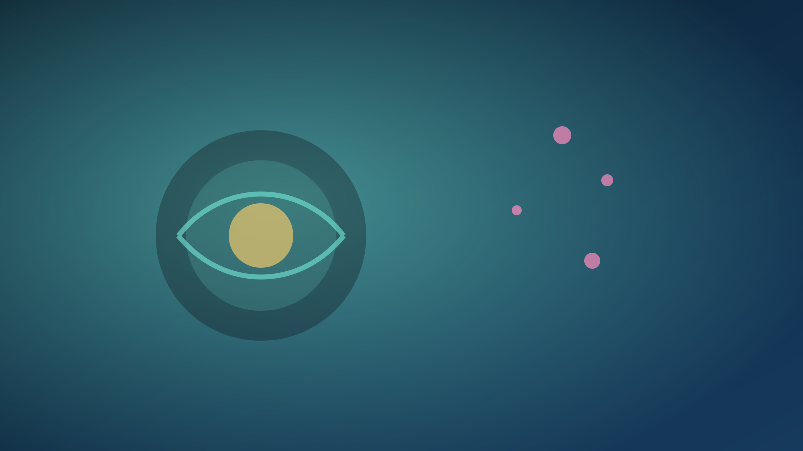
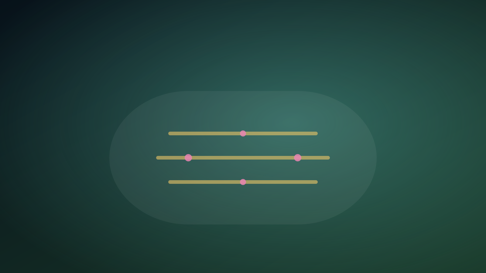
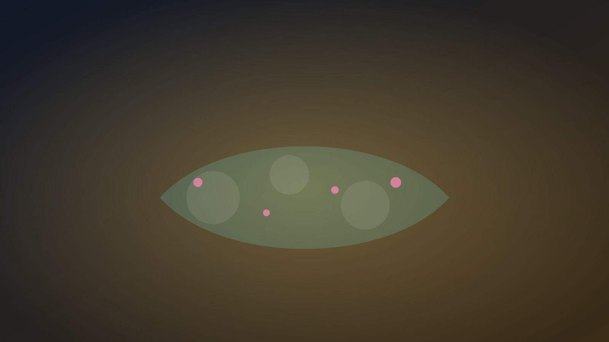

生物・進化
ゲノム、進化、生態、動物、植物、微生物の論文を読みます。

ウイルス進化は「宿主の性別」で分岐する？ 生物・進化の記事一覧Hotarun Journal
Nature、Science、Cell系の新着論文を、生物、医学、宇宙、AI、心理、古生物などのジャンルに分けて整理する科学ブログです。

Genres
ゲノム、進化、生態、動物、植物、微生物の論文を読みます。

ウイルス進化は「宿主の性別」で分岐する？ 生物・進化の記事一覧疾患、臨床研究、創薬、神経科学、健康科学の論文を読みます。
 マラリアが「RNA」を核へ運び、免疫細胞を改変する
医学・健康の記事一覧
マラリアが「RNA」を核へ運び、免疫細胞を改変する
医学・健康の記事一覧
宇宙、惑星、気候、地球科学、環境研究を読みます。
 深発地震の引き金は「相転移の熱」だった？
宇宙・地球の記事一覧
深発地震の引き金は「相転移の熱」だった？
宇宙・地球の記事一覧
AI、ロボット、材料、量子、計算科学の論文を読みます。
 DNAの“よじれ”が回路になる
AI・テクノロジーの記事一覧
DNAの“よじれ”が回路になる
AI・テクノロジーの記事一覧
認知、行動、言語、社会、コミュニケーション研究を読みます。
脳がなくても「学習」できる？ 心理・社会の記事一覧化石、古生物、人類史、考古学の論文を読みます。
 三葉虫は「一回の脱皮」で別の生き物になった
古生物・考古の記事一覧
三葉虫は「一回の脱皮」で別の生き物になった
古生物・考古の記事一覧
Articles
インフルエンザAを実験進化させ、性差と遺伝背景が変異選択をどう変えるか追跡。
淡水適応の速さを、創始者に混じる少数個体が左右するという発見。
遺伝子獲得とゲノム縮小、対照的な戦略が並ぶことを示した比較ゲノム研究。

真核に近縁な古細菌の巨大ゲノムを、獲得・重複イベントで分解。

宿主多様性×空間構造が、病原体の専門化を左右する可能性。
抗ファージ防御に関わる逆転写酵素系が生む“非典型DNA合成”。

エチレン受容体が、ホルモンだけでなくER赤／酸化状態を検知する可能性。

休眠応答レギュロンの変化が、ヒト適応系統で繰り返し起きた可能性。
病原体RNAが宿主核内スプライシングへ干渉するという新しい免疫回避像。
薬剤抵抗性を、変異だけでなく状態遷移と転写ネットワークで捉え直す仮説。
オリビン相転移の潜熱が断層弱化を引き起こす可能性を実験で検証。

population phylogenomicsの高次元MCMCを、次元削減×並列化で高速化。
転写が作る超らせんが隣接遺伝子の発現を結び付ける、物理起源のフィードバック。

短すぎても長すぎても違う。アクティブ乱流が生まれる「甘い点」を実験で特定。

素材と形で“勝手に”運動が切り替わる受動適応という設計思想。
単細胞Stentorの学習様行動を、分子経路として説明しようとする試み。
脳の種差を、遺伝子そのものより「使い方（制御）」で読み解く。

成鳥性比の偏りは何で決まり、繁殖・社会にどう跳ね返るのか。
変態に伴うモジュール性・統合の再編を、化石形態から定量化。

中生代の急速多様化と沿岸ニッチへの放散の順序を、系統ゲノムで推定。

古代ゲノムから、帝国崩壊後の人々の移動と家族の連続性を読み解きます。

中緯度の冬季降水を左右する、大気循環の不確実性を整理します。

シエラレオネで実装された、医薬品配分のための意思決定型機械学習を読みます。

温かい返答を学習させた言語モデルで、精度と迎合性がどう変わるかを見ます。

DNAの状態を見分けるゲノム編集酵素ThermoCas9の可能性を整理します。
性能指標、検証データ、実験確認の有無からAI生命科学論文を読みます。
現象、手法、モデル、生物学的意味に分けて読むための型を紹介します。
新規性、データ量、再現性からゲノム研究の読みどころを整理します。
広告：楽天アフィリエイトリンクを含みます。価格や在庫はリンク先でご確認ください。